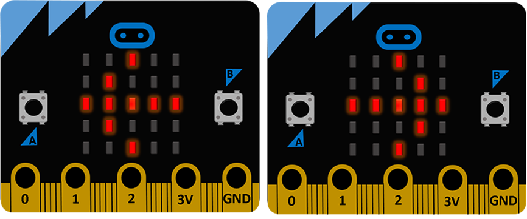

<!DOCTYPE html>
<html xmlns="http://www.w3.org/1999/xhtml" lang="sr-Cyrl"></html>
  <head>
    <meta charset="utf-8" />
    <meta name="viewport" content="width=device-width, initial-scale=1.0" />
<title>Велосипед со сигнализација &#8212; Програмирање микробит уређаја у Микропајтону – приручник за пројектну наставу за седми и осми разред</title>
    <link rel="stylesheet" href="../_static/pygments.css" type="text/css" />
    <link rel="stylesheet" href="../_static/basic.css" type="text/css" />
    <link rel="stylesheet" type="text/css" href="../_static/activecode.css" />
    <link rel="stylesheet" type="text/css" href="../_static/codemirror.css" />
    <link rel="stylesheet" type="text/css" href="../_static/clickable.css" />
    <link rel="stylesheet" type="text/css" href="../_static/pytutor.css" />
    <link rel="stylesheet" type="text/css" href="../_static/modal-basic.css" />
    <link rel="stylesheet" type="text/css" href="../_static/datafile.css" />
    <link rel="stylesheet" type="text/css" href="../_static/dragndrop.css" />
    <link rel="stylesheet" type="text/css" href="../_static/fitb.css" />
    <link rel="stylesheet" type="text/css" href="../_static/matrixeq.css" />
    <link rel="stylesheet" type="text/css" href="../_static/parsons.css" />
    <link rel="stylesheet" type="text/css" href="../_static/lib/prettify.css" />
    <link rel="stylesheet" type="text/css" href="../_static/poll.css" />
    <link rel="stylesheet" type="text/css" href="../_static/showEval.css" />
    <link rel="stylesheet" type="text/css" href="../_static/tabbedstuff.css" />
    <link rel="stylesheet" type="text/css" href="https://stackpath.bootstrapcdn.com/bootstrap/4.2.1/css/bootstrap.min.css" />
    <link rel="stylesheet" type="text/css" href="../_static/video.css" />
    <link rel="stylesheet" type="text/css" href="../_static/webgldemo.css" />
    <link rel="stylesheet" type="text/css" href="../_static/webglinteractive.css" />
    <link rel="stylesheet" type="text/css" href="../_static/karel.css" />
    <link rel="stylesheet" type="text/css" href="../_static/notes.css" />
    <link rel="stylesheet" type="text/css" href="../_static/simanim.css" />
    <link rel="stylesheet" type="text/css" href="../_static/pycode.css" />
    <link rel="stylesheet" type="text/css" href="../_static/p5js.css" />
    <link rel="stylesheet" href="../_static/user-highlights.css" type="text/css" />
    <link rel="stylesheet" href="https://use.fontawesome.com/releases/v5.1.1/css/all.css" type="text/css" />
    <link rel="stylesheet" href="../_static/bootstrap-4.0.0-dist/css/bootstrap.min.css" type="text/css" />
    <link rel="stylesheet" href="../_static/flatly.min.css" type="text/css" />
    <link rel="stylesheet" href="../_static/petlja-runestone.css" type="text/css" />
    <script id="documentation_options" data-url_root="../" src="../_static/documentation_options.js"></script>
    <script type="text/javascript" src="../_static/runestonebase.js"></script>
    <script type="text/javascript" src="../_static/jquery.js"></script>
    <script type="text/javascript" src="../_static/underscore.js"></script>
    <script type="text/javascript" src="../_static/doctools.js"></script>
    <script type="text/javascript" src="../_static/language_data.js"></script>
    <script type="text/javascript" src="../_static/jquery.highlight.js"></script>
    <script type="text/javascript" src="../_static/bookfuncs.js"></script>
    <script type="text/javascript" src="../_static/codemirror.js"></script>
    <script type="text/javascript" src="../_static/xml.js"></script>
    <script type="text/javascript" src="../_static/css.js"></script>
    <script type="text/javascript" src="../_static/python.js"></script>
    <script type="text/javascript" src="../_static/htmlmixed.js"></script>
    <script type="text/javascript" src="../_static/javascript.js"></script>
    <script type="text/javascript" src="../_static/jquery_i18n/CLDRPluralRuleParser.js"></script>
    <script type="text/javascript" src="../_static/jquery_i18n/jquery.i18n.js"></script>
    <script type="text/javascript" src="../_static/jquery_i18n/jquery.i18n.messagestore.js"></script>
    <script type="text/javascript" src="../_static/jquery_i18n/jquery.i18n.fallbacks.js"></script>
    <script type="text/javascript" src="../_static/jquery_i18n/jquery.i18n.language.js"></script>
    <script type="text/javascript" src="../_static/jquery_i18n/jquery.i18n.parser.js"></script>
    <script type="text/javascript" src="../_static/jquery_i18n/jquery.i18n.emitter.js"></script>
    <script type="text/javascript" src="../_static/jquery_i18n/jquery.i18n.emitter.bidi.js"></script>
    <script type="text/javascript" src="../_static/activecode-i18n.en.js"></script>
    <script type="text/javascript" src="../_static/skulpt.min.js"></script>
    <script type="text/javascript" src="../_static/skulpt-stdlib.js"></script>
    <script type="text/javascript" src="../_static/activecode.js"></script>
    <script type="text/javascript" src="../_static/clike.js"></script>
    <script type="text/javascript" src="../_static/timed_activecode.js"></script>
    <script type="text/javascript" src="../_static/animationbase.js"></script>
    <script type="text/javascript" src="../_static/mchoice.js"></script>
    <script type="text/javascript" src="../_static/timedmc.js"></script>
    <script type="text/javascript" src="../_static/timed.js"></script>
    <script type="text/javascript" src="../_static/mchoice-i18n.en.js"></script>
    <script type="text/javascript" src="../_static/clickable.js"></script>
    <script type="text/javascript" src="../_static/timedclickable.js"></script>
    <script type="text/javascript" src="../_static/d3.v2.min.js"></script>
    <script type="text/javascript" src="../_static/jquery.ba-bbq.min.js"></script>
    <script type="text/javascript" src="../_static/jquery.jsPlumb-1.3.10-all-min.js"></script>
    <script type="text/javascript" src="../_static/pytutor.js"></script>
    <script type="text/javascript" src="../_static/codelens.js"></script>
    <script type="text/javascript" src="../_static/datafile.js"></script>
    <script type="text/javascript" src="../_static/dragndrop.js"></script>
    <script type="text/javascript" src="../_static/timeddnd.js"></script>
    <script type="text/javascript" src="../_static/dragndrop-i18n.en.js"></script>
    <script type="text/javascript" src="../_static/fitb.js"></script>
    <script type="text/javascript" src="../_static/timedfitb.js"></script>
    <script type="text/javascript" src="../_static/fitb-i18n.en.js"></script>
    <script type="text/javascript" src="../_static/matrixeq.js"></script>
    <script type="text/javascript" src="../_static/lib/prettify.js"></script>
    <script type="text/javascript" src="../_static/lib/hammer.min.js"></script>
    <script type="text/javascript" src="../_static/parsons.js"></script>
    <script type="text/javascript" src="../_static/parsons-i18n.en.js"></script>
    <script type="text/javascript" src="../_static/timedparsons.js"></script>
    <script type="text/javascript" src="../_static/poll.js"></script>
    <script type="text/javascript" src="../_static/reveal.js"></script>
    <script type="text/javascript" src="../_static/shortanswer.js"></script>
    <script type="text/javascript" src="../_static/timed_shortanswer.js"></script>
    <script type="text/javascript" src="../_static/showEval.js"></script>
    <script type="text/javascript" src="../_static/tabbedstuff.js"></script>
    <script type="text/javascript" src="../_static/runestonevideo.js"></script>
    <script type="text/javascript" src="../_static/webglinteractive.js"></script>
    <script type="text/javascript" src="../_static/FileSaver.min.js"></script>
    <script type="text/javascript" src="../_static/Blob.js"></script>
    <script type="text/javascript" src="../_static/karelCorner.js"></script>
    <script type="text/javascript" src="../_static/karelRobot.js"></script>
    <script type="text/javascript" src="../_static/karelWorld.js"></script>
    <script type="text/javascript" src="../_static/karelRobotDrawer.js"></script>
    <script type="text/javascript" src="../_static/karelUI.js"></script>
    <script type="text/javascript" src="../_static/karel.js"></script>
    <script type="text/javascript" src="../_static/karel-i18n.en.js"></script>
    <script type="text/javascript" src="../_static/notes.js"></script>
    <script type="text/javascript" src="../_static/pygamelib-init.js"></script>
    <script type="text/javascript" src="../_static/blockly/blockly_compressed.js"></script>
    <script type="text/javascript" src="../_static/blockly/blocks_compressed.js"></script>
    <script type="text/javascript" src="../_static/blockly/python_compressed.js"></script>
    <script type="text/javascript" src="../_static/blockly/msg-sr.js"></script>
    <script type="text/javascript" src="../_static/blockpy/utilities.js"></script>
    <script type="text/javascript" src="../_static/blockpy/python_errors.js"></script>
    <script type="text/javascript" src="../_static/blockpy/ast_node_visitor.js"></script>
    <script type="text/javascript" src="../_static/blockpy/abstract_interpreter.js"></script>
    <script type="text/javascript" src="../_static/blockpy/pytifa.js"></script>
    <script type="text/javascript" src="../_static/blockpy/abstract_interpreter_definitions.js"></script>
    <script type="text/javascript" src="../_static/blockpy/python_to_blockly.js"></script>
    <script type="text/javascript" src="../_static/blockpy/imported.js"></script>
    <script type="text/javascript" src="../_static/blockpy/blocks/class.js"></script>
    <script type="text/javascript" src="../_static/blockpy/blocks/comment.js"></script>
    <script type="text/javascript" src="../_static/blockpy/blocks/comprehensions.js"></script>
    <script type="text/javascript" src="../_static/blockpy/blocks/dict.js"></script>
    <script type="text/javascript" src="../_static/blockpy/blocks/if.js"></script>
    <script type="text/javascript" src="../_static/blockpy/blocks/io.js"></script>
    <script type="text/javascript" src="../_static/blockpy/blocks/lists.js"></script>
    <script type="text/javascript" src="../_static/blockpy/blocks/sets.js"></script>
    <script type="text/javascript" src="../_static/blockpy/blocks/loops.js"></script>
    <script type="text/javascript" src="../_static/blockpy/blocks/parking.js"></script>
    <script type="text/javascript" src="../_static/blockpy/blocks/tuple.js"></script>
    <script type="text/javascript" src="../_static/blockpy/blocks/turtles.js"></script>
    <script type="text/javascript" src="../_static/blockpy/blocks/text.js"></script>
    <script type="text/javascript" src="../_static/blockpy-modal.js"></script>
    <script type="text/javascript" src="../_static/simanim.js"></script>
    <script type="text/javascript" src="https://cdn.jsdelivr.net/pyodide/v0.16.1/full/pyodide.js"></script>
    <script type="text/javascript" src="../_static/pycode.js"></script>
    <script type="text/javascript" src="//toolness.github.io/p5.js-widget/p5-widget.js"></script>
    <script type="text/javascript" src="../_static/p5js.js"></script>
    <script async="async" type="text/javascript" src="https://cdnjs.cloudflare.com/ajax/libs/mathjax/2.7.5/latest.js?config=TeX-AMS-MML_HTMLorMML"></script>
    <script type="text/javascript" src="../_static/mchoice-i18n.sr-Cyrl.js"></script>
    <script type="text/javascript" src="../_static/mchoice-i18n.sr.js"></script>
    <script type="text/javascript" src="../_static/mchoice-i18n.sr-Latn.js"></script>
    <script type="text/javascript" src="../_static/dragndrop-i18n.sr-Cyrl.js"></script>
    <script type="text/javascript" src="../_static/dragndrop-i18n.sr.js"></script>
    <script type="text/javascript" src="../_static/dragndrop-i18n.sr-Latn.js"></script>
    <script type="text/javascript" src="../_static/fitb-i18n.sr-Cyrl.js"></script>
    <script type="text/javascript" src="../_static/fitb-i18n.sr.js"></script>
    <script type="text/javascript" src="../_static/fitb-i18n.sr-Latn.js"></script>
    <script type="text/javascript" src="../_static/parsons-i18n.sr-Cyrl.js"></script>
    <script type="text/javascript" src="../_static/parsons-i18n.sr.js"></script>
    <script type="text/javascript" src="../_static/parsons-i18n.sr-Latn.js"></script>
    <script type="text/javascript" src="../_static/activecode-i18n.sr-Cyrl.js"></script>
    <script type="text/javascript" src="../_static/activecode-i18n.sr.js"></script>
    <script type="text/javascript" src="../_static/activecode-i18n.sr-Latn.js"></script>
    <script type="text/javascript" src="../_static/jquery-ui-1.10.3.custom.min.js"></script>
    <script type="text/javascript" src="../_static/jquery-fix.js"></script>
    <script type="text/javascript" src="../_static/bootstrap-4.0.0-dist/js/bootstrap.min.js"></script>
    <script type="text/javascript" src="../_static/bootstrap-4.0.0-dist/js/bootstrap.bundle.min.js"></script>
    <script type="text/javascript" src="../_static/bootstrap-sphinx.js"></script>
    <script type="text/javascript" src="../_static/waypoints.min.js"></script>
    <script type="text/javascript" src="../_static/rangy-core.js"></script>
    <script type="text/javascript" src="../_static/rangy-textrange.js"></script>
    <script type="text/javascript" src="../_static/rangy-cssclassapplier.js"></script>
    <script type="text/javascript" src="../_static/user-highlights.js"></script>
    <script type="text/javascript" src="../_static/jquery.idle-timer.js"></script>
    <script type="text/javascript" src="../_static/processing-1.4.1.min.js"></script>
    <script type="text/javascript" src="../_static/jquery.hotkey.js"></script>
    <script type="text/javascript" src="../_static/jquery-migrate-1.2.1.min.js"></script>
    <link rel="index" title="Index" href="../genindex.html" />
    <link rel="search" title="Search" href="../search.html" />
    <link rel="next" title="Гаража" href="Garaza.html" />
    <link rel="prev" title="Бројач на чекори" href="Brojac koraka.html" />
<meta charset='utf-8'>
<meta http-equiv='X-UA-Compatible' content='IE=edge,chrome=1'>
<meta content='width=device-width, initial-scale=1.0, maximum-scale=1.0, user-scalable=0' name='viewport' />
<link rel="shortcut icon" href="../_static/favicon.ico" type="image/ico" />

<script type="text/javascript">
  eBookConfig = {};
  eBookConfig.host = 'http://127.0.0.1:8000' ? 'http://127.0.0.1:8000' : 'http://127.0.0.1:8000';
  eBookConfig.app = eBookConfig.host + '/runestone';
  eBookConfig.ajaxURL = eBookConfig.app + '/ajax/';
  eBookConfig.course = 'microbit_micropython_vii_viii';
  eBookConfig.logLevel = '0';
  eBookConfig.loginRequired = 'false';
  eBookConfig.build_info = "";
  eBookConfig.isLoggedIn = false;
  eBookConfig.useRunestoneServices = 'false';
  eBookConfig.python3 = 'true';
  eBookConfig.basecourse = 'microbit_micropython_vii_viii';
  eBookConfig.runestone_version = '';
  eBookConfig.imagesDir = '../_images/';
  eBookConfig.staticDir = '../_static/';
  if(typeof(Sk) != "undefined")
      Sk.imgPath = eBookConfig.imagesDir;
</script>

<div id="fb-root"></div>


  </head><body>


<!-- Begin navbar -->

<nav id="navbar" class="navbar navbar-default navbar-fixed-top" role="navigation">

  <div class="container">

    <div class="navbar-header">
      <button type="button" class="navbar-toggle collapsed" data-toggle="collapse" data-target="#bs-example-navbar-collapse-1">
        <span class="sr-only">Toggle navigation</span>
        <span class="icon-bar"></span>
        <span class="icon-bar"></span>
        <span class="icon-bar"></span>
      </button>
      
    </div>

    <div class="collapse navbar-collapse" id="bs-example-navbar-collapse-1" style="margin-top: 10px; margin-left: 25px;">
      <ul class="nav navbar-nav">
        <li class="active"><a href="../">МycroPython за уредот Микро:бит</a></li>
      </ul>
    </div>
  </div>
</nav>


<div class="container col-md-12" id="continue-reading"></div>

<div class="container col-md-8 col-md-offset-2" id="main-content" style="margin-top: 70px;">
  
  <div class="section" id="id1">
<h1>Велосипед со сигнализација<a class="headerlink" href="#id1" title="Permalink to this headline">¶</a></h1>
<div class="line-block">
<div class="line"><br /></div>
</div>

    <div class="course-box course-box-info">
        <div class="course-content">
            <p>
<ul class="simple">
<li><p>На која возраст може едно дете самостојно да вози велосипед?</p></li>
<li><p>Каква сигнализација е неопходно да има секој велосипед?</p></li>
<li><p>Кои правила треба да ги почитуваме ако сакаме безбедно да учествуваме во сообраќајот?</p></li>
<li><p>Дали можат современите технологии да ни овозможат безбедно возење?</p></li>
</ul>

    </p></div></div>
<p>Доколку ги најдовте одговорите на горенаведените прашања и го прочитавте Законот за безбедност на сообраќајот на патиштата, може да продолжиме со работа! ☺️</p>
<p>Со помош на уредот <em>Микро:бит</em> ќе го опремиме велосипедот со дополнителни сигнални уреди и со тоа ќе овозможиме побезбедно возење.</p>
<div class="line-block">
<div class="line"><br /></div>
</div>
<p><strong>Што ни е потребно?</strong></p>
<ul class="simple">
<li><p>Три уреди <em>Микро:бит</em>;</p></li>
<li><p>Ленти или материјал за држач, за да може да ги поставиме уредите на велосипед.</p></li>
</ul>
<div class="line-block">
<div class="line"><br /></div>
</div>
<a class="reference internal image-reference" href="../_images/migavci.png"></a>
<div class="line-block">
<div class="line"><br /></div>
</div>
<p>Следното видео содржи објаснување како уредите <em>Микро:бит</em> можат меѓусебно да комуницираат и дадени се предлози за поставување дополнителна сигнализација на велосипед:</p>

    <div  id="I8o5yGSLUKs" class="ytvideo"  style="text-align: center; margin: 15px; cursor:pointer;">
        <div style="background-image: url('https://img.youtube.com/vi/I8o5yGSLUKs/mqdefault.jpg'); background-repeat: no-repeat;background-position: center; height: 210px; width: 310px; margin: 0 auto; border: 1px solid #20c997">
             
        </div>
      

        </div>
    <div id="modal-I8o5yGSLUKs" class="ytvideoclose" style="display: none; position: fixed; top: 0; left: 0; width: 100vw; height: 100vh; background-color: rgba(128, 182, 128, 0.3); z-index: 10000;">
        <div style="background-color: white; position: fixed; top: 4vh; left: 5vw; width:  90vw; height:  90vh; z-index: 100;" id="YTmodal-I8o5yGSLUKs">
        </div>
    </div>
    
    
    <div class="line-block">
<div class="line"><br /></div>
</div>
<p>Кодот за уредот <em>Микро:бит</em> што го поставивме на воланот:</p>

<div data-childcomponent="bicikl_slanje_volan" class="course-box course-box-problem course-content">

<textarea data-component="activecode" id=bicikl_slanje_volan data-lang="python" 
      data-timelimit=25000 data-coach="true" data-codelens="true"  
    data-audio=''   
             data-passivecode="true"  data-hidehistory=true
    data-includesrc="from microbit import *                                      
import radio

radio.on()

while True:
    if button_a.is_pressed():
        radio.send(&quot;L&quot;)
        display.show(Image.ARROW_W)
        sleep(3000)
    if button_b.is_pressed():
        radio.send(&quot;D&quot;)
        display.show(Image.ARROW_E)
        sleep(3000)


    display.clear()"   >


</textarea>
</div>
<p>Код за лев уред Микро:бит (заден лев трепкач):</p>

<div data-childcomponent="bicikl_prijem_L" class="course-box course-box-problem course-content">

<textarea data-component="activecode" id=bicikl_prijem_L data-lang="python" 
      data-timelimit=25000 data-coach="true" data-codelens="true"  
    data-audio=''   
             data-passivecode="true"  data-hidehistory=true
    data-includesrc="from microbit import *                                      
import radio

radio.on()

while True:
    svrti = radio.receive()
    if svrti is not None:
        if svrti == &quot;L&quot;:
            for i in range(4):
                display.show(Image.ARROW_W)
                sleep(1000)
                display.clear()
                sleep(500)"   >


</textarea>
</div>
<p>Код за десен уред Микро:бит (заден десен трепкач):</p>

<div data-childcomponent="bicikl_prijem_D" class="course-box course-box-problem course-content">

<textarea data-component="activecode" id=bicikl_prijem_D data-lang="python" 
      data-timelimit=25000 data-coach="true" data-codelens="true"  
    data-audio=''   
             data-passivecode="true"  data-hidehistory=true
    data-includesrc="from microbit import *                                      
import radio

radio.on()

while True:
    svrti = radio.receive()
    if svrti is not None:
        if svrti == &quot;D&quot;:
            for i in range(4):
                display.show(Image.ARROW_E)
                sleep(1000)
                display.clear()
                sleep(500)"   >


</textarea>
</div>
<p>Доколку одлучивте уредот Микро:бит да го поставите на кацига:</p>

<div data-childcomponent="bicikl_slanje_kaciga" class="course-box course-box-problem course-content">

<textarea data-component="activecode" id=bicikl_slanje_kaciga data-lang="python" 
      data-timelimit=25000 data-coach="true" data-codelens="true"  
    data-audio=''   
             data-passivecode="true"  data-hidehistory=true
    data-includesrc="from microbit import *                                      
import radio

radio.on()

while True:
    stranicno__dvizenje = accelerometer.get_x()
    if stranicno__dvizenje &gt; 300: # koga ja navednuvame glavata nalevo
        radio.send(&quot;L&quot;)
        # gledano od prednata strana, nalevo pokazuva strelkata ARROW_E
        display.show(Image.ARROW_E)
        sleep(3000)
    if stranicno__dvizenje &lt; -300: # koga ja navednuvame glavata nadesno
        radio.send(&quot;D&quot;)
        # gledano od prednata strana, nadesno pokazuva strelkata ARROW_W
        display.show(Image.ARROW_W)
        sleep(3000)
    display.clear()"   >


</textarea>
</div>
<p>Размислете како би можеле да примените технологија за да го направите возењето велосипед уште побезбедно. Во посочениот пример, уредот <em>Микро:бит</em> го поставивме на кацига и сигнализацијата ја вклучувавме со благо наведнување на главата налево и надесно. Развијте систем кој ќе овозможи да се активира сигнализацијата со движење на воланот од велосипедот. Додадете опција уредот <em>Микро:бит</em> да ве предупреди да ги вклучите светлата при намалена видливост.</p>
<p>Секако, додека возите, без оглед на дополнителните сигнални уреди, треба задолжително да се придржувате до законските правила и прописи! Општо, кога правите технички уред мора да водите сметка неговата примена да биде во согласност со прописите за областа во која ќе се применува.</p>
<p>Направете презентација на темата <em>Безбедност во сообраќајот</em> и претставете ги резултатите од вашето истражување и проучувањето на Законот за безбедност на сообраќајот на патиштата. Особено обратете внимание на правилата за учество на пешаците и велосипедистите во сообраќајот!</p>
</div>


  
      <div class="col-md-12">
<ul class="pager">
        <li id="relations-prev" title='Previous chapter - Бројач на чекори' data-toggle="tooltip"><a href="Brojac koraka.html">Previous chapter</a></li>
    
        <li id="relations-next" title='Next chapter - Гаража' data-toggle="tooltip"><a href="Garaza.html">Next chapter</a></li>
</ul>

<!-- <ul class="pager"> -->
    <!-- -->
        <!-- <li id="relations-prev" title='Претходно поглавље - Бројач на чекори' data-toggle="tooltip"><a href="Brojac koraka.html">Претходно поглавље</a></li> -->
    <!--  -->
    <!-- -->
        <!-- <li id="relations-next" title='Следеће поглавље - Гаража' data-toggle="tooltip"><a href="Garaza.html">Следеће поглавље</a></li> -->
    <!-- -->
<!-- </ul> -->

<script type="text/javascript">

  $('#relations-prev').tooltip({'placement':'right', 'selector': '', 'delay': { show: 100, hide: 50}});
  $('#relations-next').tooltip({'placement':'left', 'selector': '', 'delay': { show: 100, hide: 50}});

</script>
</div>
  
</div>
<footer class="footer col-md-12">
    <div class="container">
        <div class="text-center">
            <hr>
            <p class="text-muted">
                <span class="pull-left">&copy; 2019 Petlja (Created using  <a href="https://pypi.org/project/Sphinx/">Swinx</a>, <a href="http://runestoneinteractive.org/">RunestoneComponents</a> and <a href="https://github.com/Petlja/PetljaDoc">PetljaDoc</a>)</span>
            </p>
        </div>
    </div>
</footer>


<script type="text/javascript">
  var _gaq = _gaq || [];
  _gaq.push(['_setAccount', 'UA-32029811-1']);
  _gaq.push(['_trackPageview']);

  (function() {
    var ga = document.createElement('script'); ga.type = 'text/javascript'; ga.async = true;
    ga.src = ('https:' == document.location.protocol ? 'https://ssl' : 'http://www') + '.google-analytics.com/ga.js';
    var s = document.getElementsByTagName('script')[0]; s.parentNode.insertBefore(ga, s);
  })();
</script>


  </body>
</html>